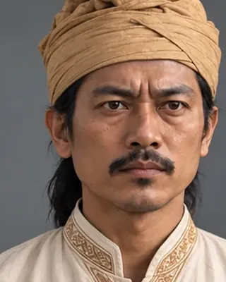
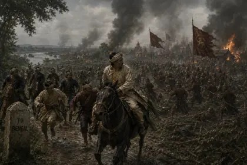

Burhagohain from 1817 · Burhagohain

Eldest son of Purnananda; became Burhagohain in 1817, deposed Chandrakanta in February 1818 and installed Purandar Singha, and later sought British help.
Record confidence: medium.
Open interactive profile
February 1818

February 1819